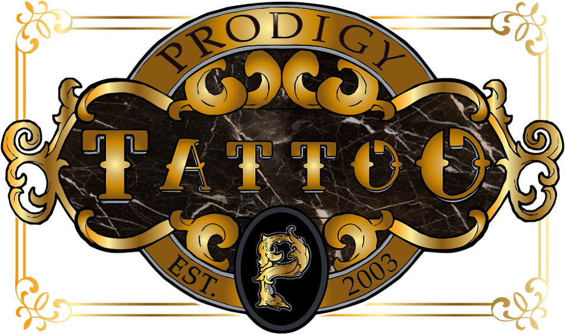

Don't worry.
I do this all the time.
Kohl's E Commerce

- Developed custom web interfaces for several different departments
- Edited database and developed SQL scripts for all departmental report generation
- Developed entire inventory system for Order Consolidation
Prodigy Tattoo

- Complete tear down and redesign of entire website
- Transferred domain and migrated files and data to new host
- Helped clean up copy and take new photos to complement redesign
3D Creation Station
- Built entire website from the ground up
- Taught team to use Github and Slack for group communication and version control
- Created and managed social media accounts as well as industry specific marketplace profiles